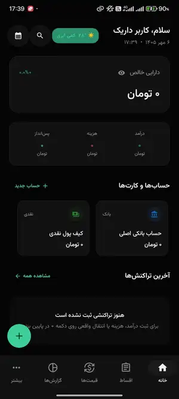
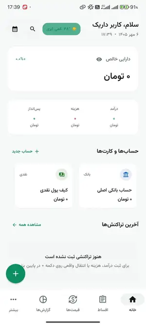
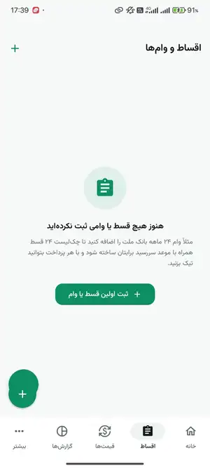

💳
حسابها و داراییها
ثبت حسابهای بانکی، کیف پول و مشاهده نمای کلی از وضعیت مالی.
.jpg)
حسابها، درآمد و هزینه، اقساط و وامها و گزارشهای مالی را در یک محیط فارسی و مینیمال مدیریت کن. داریک برای استفاده روزمره طراحی شده و بخشهای اصلی مدیریت مالی را بدون پیچیدگی در اختیارت میگذارد.

ابزارهای مهم مدیریت مالی شخصی، در یک تجربه ساده و یکپارچه.
ثبت حسابهای بانکی، کیف پول و مشاهده نمای کلی از وضعیت مالی.
ثبت تراکنشها و بررسی سریع جریان ورودی و خروجی پول.
مدیریت سررسیدها، مبالغ اقساط و پرداختهای دورهای.
مرور بهتر درآمدها و هزینهها برای تصمیمگیری روزمره.
ظاهر هماهنگ با اپ و امکان تغییر سریع بین حالت تیره و روشن.
قابلیتهای اصلی مدیریت مالی بدون نیاز دائمی به اینترنت در دسترس هستند.
نمایی از تجربه کاربری داریک در حالت روشن و تیره.


نسخه فعلی را میتوانید مستقیم دریافت کنید یا از مایکت نصب کنید.
بخشهای اصلی مدیریت مالی برای استفاده آفلاین طراحی شدهاند؛ امکاناتی که به اطلاعات آنلاین وابسته باشند طبیعتاً اینترنت میخواهند.
برای قابلیتهای اصلی مدیریت مالی، ساختار برنامه بر استفاده شخصی و ساده تمرکز دارد.
بله، دارک مود و لایت مود در دسترس هستند و ظاهر صفحه دانلود نیز با همین سبک هماهنگ شده است.
میتوانید فایل APK را مستقیم دانلود کنید یا از صفحه رسمی داریک در مایکت نصب را انجام دهید.